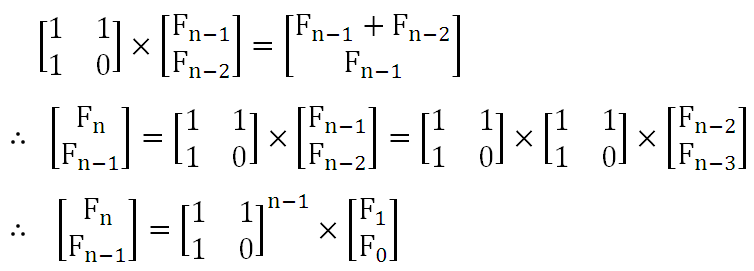
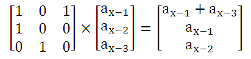
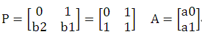
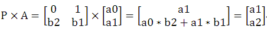
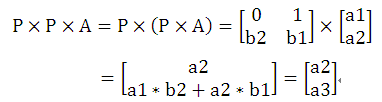
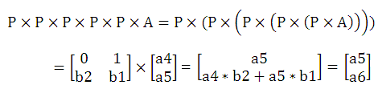

矩阵乘法，特别是矩阵快速幂运算在实际中的应用非常广泛。例如，利用矩阵乘法可以方便快速地求解线性递推关系。
例如，我们知道斐波拉契数列具有如下线性递推关系：
F(0)=0 F(1)=1
F(n)= F(n-1) + F(n-2) (n>=2)
构造一个矩阵，可以利用矩阵乘法完成递推。如下所示。

【例1】斐波拉契数列第n项。
输入整数n (0 ≤ n ≤ 1,000,000,000)，求斐波拉契数列第n项的值。由于F(n)值很大，要求只输出其模10000的结果。
例如，输入 9 ，输出 34 ； 输入 999999999 ，输出 626 ；
输入 1000000000，输出 6875。
（1）编程思路。
利用矩阵的快速幂运算完成F(n)的计算。
（2）源程序1。
#include <stdio.h>
#include <string.h>
#define MODNUM 10000
struct Matrix
{
__int64 mat[3][3]; // 存储矩阵中各元素
};
Matrix matMul(Matrix a ,Matrix b,int n)
{
Matrix c;
memset(c.mat,0,sizeof(c.mat));
int i,j,k;
for (i = 1; i<=n ; i++)
for (j=1 ;j<=n ; j++)
for (k = 1 ;k<=n ;k++)
{
c.mat[i][j]=(c.mat[i][j]+a.mat[i][k] * b.mat[k][j]) % MODNUM;
}
return c;
}
Matrix quickMatPow(Matrix a ,int n,int b) // n阶矩阵a快速b次幂
{
Matrix c;
memset(c.mat ,0 ,sizeof(c.mat));
int i;
for (i = 1 ;i <= n ;i++)
c.mat[i][i] = 1;
while (b!=0)
{
if (b & 1)
c = matMul(c ,a ,n); // c=c*a;
a = matMul(a ,a ,n); // a=a*a
b /= 2;
}
return c;
}
int main()
{
int n ;
Matrix p ;
while(scanf("%d", &n) && n != -1)
{
if (n==0 )
printf("0\n");
else
{
p.mat[1][1]=1; p.mat[1][2]=1;
p.mat[2][1]=1; p.mat[2][2]=0;
p = quickMatPow(p,2,n);
printf("%d\n", p.mat[2][1]);
}
}
return 0;
}
源程序1直接采用本博客上一篇文章中的快速幂运算函数实现的。由于本题中构造矩阵为2*2，因此可以编写一个简洁的程序。
（3）源程序2。
#include <stdio.h>
struct matrix {
__int64 s11 , s12 , s21 , s22 ;
};
matrix f(matrix a,matrix b)
{
matrix p ;
p.s11 = (a.s11*b.s11 + a.s12*b.s21)%10000;
p.s12 = (a.s11*b.s12 + a.s12*b.s22)%10000;
p.s21 = (a.s21*b.s11 + a.s22*b.s21)%10000;
p.s22 = (a.s21*b.s12 + a.s22*b.s22)%10000;
return p ;
}
matrix quickpow(matrix p,int n) // 采用递归的方法实现矩阵快速幂运算
{
matrix q ;
q.s11 = q.s22 = 1 ; // 初始化为单位矩阵
q.s12 = q.s21 = 0 ;
if (n == 0)
return q ;
q = quickpow(p,n/2);
q = f(q,q);
if (n%2)
q = f(q,p);
return q ;
}
int main()
{
int n ;
matrix p ;
while(scanf("%d", &n) && n != -1)
{
p.s11 = p.s12 = p.s21 = 1 ;
p.s22 = 0 ;
p = quickpow(p,n);
printf("%d\n", p.s12);
}
return 0;
}
上面两个源程序提交给POJ 3070 “Fibonacci”，均可以Accepted。
【例2】矩阵加速（数列）。
已知a数列的定义为： a[1]=a[2]=a[3]=1
a[x]=a[x-3]+a[x-1] (x>3)
求a数列的第n项对1000000007（10^9+7）取余的值。
（1）编程思路。
因为 
所以，构造P矩阵为：p.mat[4][4]={{0,0,0},{1,0,1},{1,0,0},{0,1,0}};然后采用矩阵快速幂运算即可。
（2）源程序。
#include <stdio.h>
#include <string.h>
#define MODNUM 1000000007
struct Matrix
{
__int64 mat[4][4]; // 存储矩阵中各元素
};
Matrix matMul(Matrix a ,Matrix b,int n)
{
Matrix c;
memset(c.mat,0,sizeof(c.mat));
int i,j,k;
for (i = 1; i<=n ; i++)
for (j=1 ;j<=n ; j++)
for (k = 1 ;k<=n ;k++)
{
c.mat[i][j]=(c.mat[i][j]+a.mat[i][k] * b.mat[k][j]) % MODNUM;
}
return c;
}
Matrix quickMatPow(Matrix a ,int n,int b) // n阶矩阵a快速b次幂
{
Matrix c;
memset(c.mat ,0 ,sizeof(c.mat));
int i;
for (i = 1 ;i <= n ;i++)
c.mat[i][i] = 1;
while (b!=0)
{
if (b & 1)
c = matMul(c ,a ,n); // c=c*a;
a = matMul(a ,a ,n); // a=a*a
b /= 2;
}
return c;
}
int main()
{
int t,n;
Matrix p ;
scanf("%d",&t);
while (t--)
{
scanf("%d",&n);
if (n<4)
printf("1\n");
else
{
p.mat[1][1]=1; p.mat[1][2]=0; p.mat[1][3]=1;
p.mat[2][1]=1; p.mat[2][2]=0; p.mat[2][3]=0;
p.mat[3][1]=0; p.mat[3][2]=1; p.mat[3][3]=0;
p = quickMatPow(p,3,n-3);
printf("%lld\n",(p.mat[1][1]+p.mat[1][2]+p.mat[1][3])%MODNUM);
}
}
return 0;
}
【例3】Firepersons （POJ 2118）。
Description
The Association for Courtly Manners, an international organization for standardization of social interactions (Better known under the name Absurdly Clumsy Moralists, but let's not take prejudice.) has decided to create a new international standard defining ranks of firepersons (Formerly firemen, but the international standards of course must be politically correct.) - each fireperson receives an integer number describing his rank and when they arrive to a fire, they must enter the fire ground in order of increasing ranks and the low ranked firepersons must keep the fire burning long enough for the high ranked firepersons to enjoy extinguishing sufficiently.
The ranks are assigned according to an Arbitrary Constant Multiplier Sequence. An ACM-sequence of order k is an integer sequence defined by its first k terms a0, a1,...ak-1 and a recurrence relation an=Σ1<=i<=kan-ibi mod 10 000 for n >= k, where the bi's are integer constants. The i-th oldest fireperson then gets rank ai.
Your task is to calculate the rank of the i-th fireperson, given parameters of the ACM-sequence and the number i.
Input
The input consists of several instances. Each instance is described on a single line containing the following integers separated by a single space: k, a0, , ak-1, b1, , bk, i. Here 1 <= k <= 100 is the order of the sequence, 0 <= ai < 10 000 are the first k elements of the sequence, 0 <= bi < 10 000 are the multipliers and 0 <= i < 1 000 000 000 is the number of the element we ask for.
The input ends with a line containing a number 0.
Output
The output consists of several lines corresponding to the instances on the input. The l-th line contains a single integer ai which is the i-th element of the sequence described by the l-th input instance.
Sample Input
2 0 1 1 1 6
0
Sample Output
8
（1）编程思路。
本题的意思是： 设有递推式a(n)=Σa(n-i)*b(i) mod 10000 （1<=i<=k），求a(i)。
由于题目给定0<=i<1000000000，i值很大，因此用数组保存每个a[i]直接递推实现不现实。
因此，本题采用矩阵乘法来完成。用矩阵乘法完成递推式的求值是一种典型的方法。
以输入输出样例为例先进行说明。
样例中 k=2,a0=0,a1=1,b1=1,b2=1,求a6。
用循环递推的方法模拟计算如下：
a2=a1*b1+a0*b2=1*1+0*1=1
a3=a2*b1+a1*b2=1*1+1*1=2
a4=a3*b1+a2*b2=2*1+1*1=3
a5=a4*b1+a3*b2=3*1+2*1=5
a6=a5*b1+a4*b2=5*1+3*1=8 故输出 8。
采用矩阵计算时，先定义系数矩阵P和初始运算矩阵A：




又由于矩阵乘法满足结合律，因此 P*P*P*P*P*A=（P*P*P*P*P）*A=(P^5)*A
即本题转化为求一个矩阵的n次方这样一个基本问题。
（2）源程序。
#include <stdio.h>
#include <string.h>
#define MODNUM 10000
struct Matrix
{
int mat[110][110];
};
Matrix matMul(Matrix a ,Matrix b,int n)
{
Matrix c;
memset(c.mat,0,sizeof(c.mat));
int i,j,k;
for (k = 1; k<=n ; k++)
for (i=1 ;i<=n ; i++)
if(a.mat[i][k])
for (j = 1 ;j<=n ;j++)
c.mat[i][j] = (c.mat[i][j] + a.mat[i][k] * b.mat[k][j]) % MODNUM;
return c;
}
Matrix quickMatPow(Matrix a ,int b ,int n) // n阶矩阵a快速b次幂
{
Matrix c;
memset(c.mat ,0 ,sizeof(c.mat));
int i;
for (i = 1 ;i <= n ;i++)
c.mat[i][i] = 1;
while(b)
{
if (b & 1)
c = matMul(c ,a ,n); // c=c*a;
a = matMul(a ,a ,n); // a=a*a
b /= 2;
}
return c;
}
int main()
{
int k,n,i,sum;
int a[110] ,b[110];
Matrix start ,ans;
while (scanf("%d" ,&k) && k!=0)
{
for (i = 0 ;i < k ;i ++)
scanf("%d" ,&a[i]);
for (i = 1 ;i <=k ;i ++)
scanf("%d" ,&b[i]);
scanf("%d" ,&n);
if (n<k)
{
printf("%d\n" ,a[n]);
continue;
}
memset(start.mat ,0 ,sizeof(start.mat));
for (i = 1 ;i < k ;i ++)
start.mat[i][i+1] = 1;
for (i = 1 ;i <= k ;i ++)
start.mat[k][i] = b[k-i+1];
ans = quickMatPow(start ,n-k+1,k);
sum = 0;
for(i = 1 ;i <= k ;i++)
sum = (sum + a[i-1] * ans.mat[k][i]) % MODNUM;
printf("%d\n" ,sum);
}
return 0;
}
【例4】简单定义的函数F(x)。
设函数f(x)的定义如下：
f(x) = x (x < 10)
f(x) = a0 * f(x-1) + a1 * f(x-2) + …… + a9 * f(x-10) (x >= 10)
其中，ai(0<=i<=9) 的值为0或1。
输入a0 ~ a9以及两个正整数k和m，输出f(k)%m的结果。
（1）编程思路。
直接构造一个10*10的矩阵P，P矩阵中的第一行为输入的a0 ~ a9，第2~10行除P.mat[i][i-1] （2<=i<=10）的元素值为1外，其余全为0。
（2）源程序。
#include <stdio.h>
#include <string.h>
struct Matrix
{
__int64 mat[11][11]; // 存储矩阵中各元素
};
Matrix matMul(Matrix a ,Matrix b,int n,int m)
{
Matrix c;
memset(c.mat,0,sizeof(c.mat));
int i,j,k;
for (k = 1; k<=n ; k++)
for (i=1 ;i<=n ; i++)
if (a.mat[i][k]!=0)
for (j = 1 ;j<=n ;j++)
c.mat[i][j] = (c.mat[i][j] + a.mat[i][k] * b.mat[k][j]) % m;
return c;
}
Matrix quickMatPow(Matrix a ,int n,int b,int m) // n阶矩阵a快速b次幂
{
Matrix c;
memset(c.mat ,0 ,sizeof(c.mat));
int i;
for (i = 1 ;i <= n ;i++)
c.mat[i][i] = 1;
while (b!=0)
{
if (b & 1)
c = matMul(c ,a ,n,m); // c=c*a;
a = matMul(a ,a ,n,m); // a=a*a
b /= 2;
}
return c;
}
int main()
{
int k,m,i;
__int64 ans;
Matrix p;
while(scanf("%d%d" ,&k,&m)!=EOF)
{
memset(p.mat,0,sizeof(p.mat));
for (i=1;i<=10;i++)
scanf("%d" ,&p.mat[1][i]);
for (i=2;i<=10;i++)
p.mat[i][i-1]=1;
if (k<10)
printf("%d\n",k%m);
else
{
p = quickMatPow(p,10,k-9,m);
ans=0;
for (i=1;i<10;i++)
ans=(ans+p.mat[1][i]*(10-i))% m;
printf("%I64d\n" ,ans);
}
}
return 0;
}
将此源程序提交给 HDU 1757 “A Simple Math Problem”，可以 Accepted。